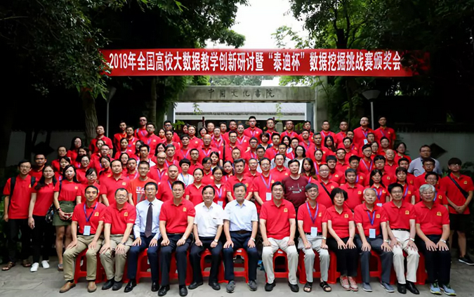

2018年7月24日，2018年全国高校大数据教学创新研讨暨“泰迪杯”数据挖掘挑战赛颁奖会圆满结束。会议在贵州大学贵州大学北校区1号行政楼报告厅隆重举行，由泰迪杯数据挖掘挑战赛组委会主办，贵州省数学学会、贵州大学承办，广州泰迪智能科技有限公司协办。
出席本次大会的有第四、五届“泰迪杯”数据挖掘挑战赛组织委员会主任、原贵州大学校长、浙江大学陈叔平教授，第六届竞赛组委会主任、佛山科技学院校长郝志峰教授，贵州省数学会理事长、贵州大学副校长向淑文教授，第六届竞赛组委会副主任、广州泰迪智能科技有限公司张良均董事长，第六届竞赛组委会委员、广东省工业与应用数学学会理事长、中山大学冯国灿教授，第六届竞赛组委会秘书长张尚佳女士，第六届竞赛组委会副秘书长张剑先生、深圳信诺公益基金会副秘书长任绍军先生、贵州大学数学与统计学院副院长胡支军教授，第六届竞赛专家组天津大学边馥萍教授、北京大学邓明华教授、信息工程大学韩中庚教授、国防科技大学吴孟达教授、北京工业大学薛毅教授、华南师范大学杨坦博士以及来自企业的命题人广州市能智电力技术有限公司总经理谢燕平先生、广州泰迪智能科技有限公司项目总监姜鹏辉先生、广州火焰信息科技有限公司技术总监苏剑林先生以及全国数十所高校的近200位大数据相关专业的老师以及获奖学生代表。
活动中，信诺公益基金会副秘书长任绍军先生向参会的嘉宾和学生代表做了以《新时代大学生的创新创业》为主题的报告，并为获奖团队颁发了信诺创新奖（并获一等奖）。
报告中，任绍军先生以一名曾经创业者的身份，对怀揣着创业理想的同学、朋友们提出了以下四点希望：
一是希望同学们培养担当意识，立大志、创大业、成大事，勇于承担起引领科技创新、促进社会发展的责任，积极投身创新创业实践，在推动社会进步、促进经济发展中追逐青春梦想。
二是希望同学们保持实干意识，弘扬“敢为人先、追求创新、百折不挠”的创业精神，坚持“创业要实”理念，从大处着眼、从小处落脚、从细微处入手，走稳走好创业步伐，努力实现成功创业在紧跟时代潮流、引领创业风尚中始终走在前列。
三是希望同学们提高机遇意识，心怀时不我待的紧迫感，敏于发现机遇、善于抢抓机遇，发挥年轻人思想活跃、创造力强的优势，弘扬创新创业精神，在投身大众创业、万众创新中实现人生价值
四是希望同学们加强风险意识，“千里之堤，溃于蚁穴”，创业之途上满是荆棘与陷阱，稍有不慎就可能坠入万丈深渊。因此，学会风险控制，不断提升能力素质、坚守道德底线、负起社会责任创新创业才能取得更加辉煌的成果。
任绍军先生亦向与会人员介绍了信诺公益基金会。信诺公益基金会作为积极响应国家“大众创业、万众创新”号召的社会组织，通过公益捐赠、出资主办、发起设立等方式，导入优秀领先的理念技术、资源或人才，推动我国新技术应用、新职业培训和新人才培养。同时，公益基金会致力于以公益基金形式，以教育资源整合、培训机构协同和产业联盟引导为手段，积极推动社会各类公益资源投入和商业资源整合。
在基金的后续运作中，信诺资本将充分发挥理事会成员在教育行业的专业知识优势和社会资源优势，加强教育机构和从业人员的交流与合作，调动社会资源积极参与教育公益事业，积极探索教育培训对新技术、新人才、新职业发展的现实意义。